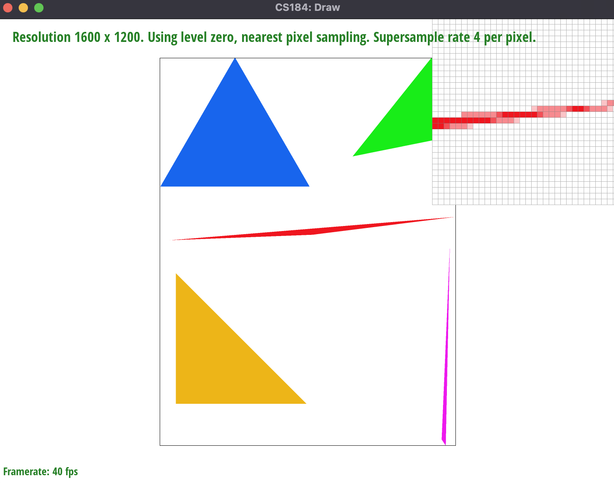
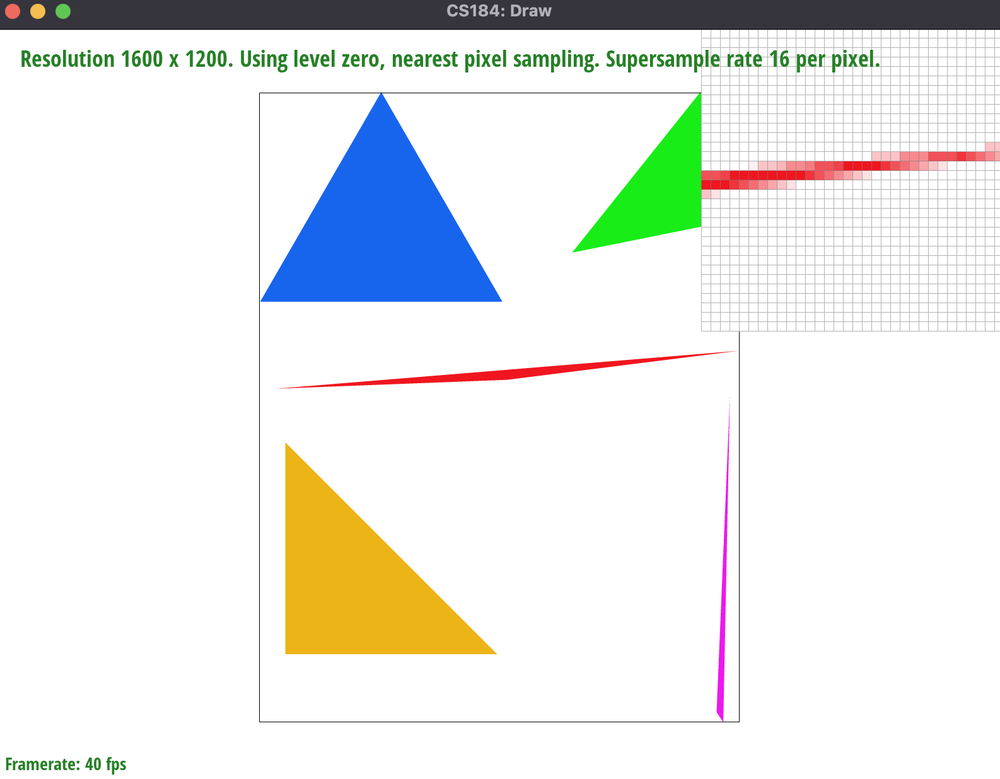
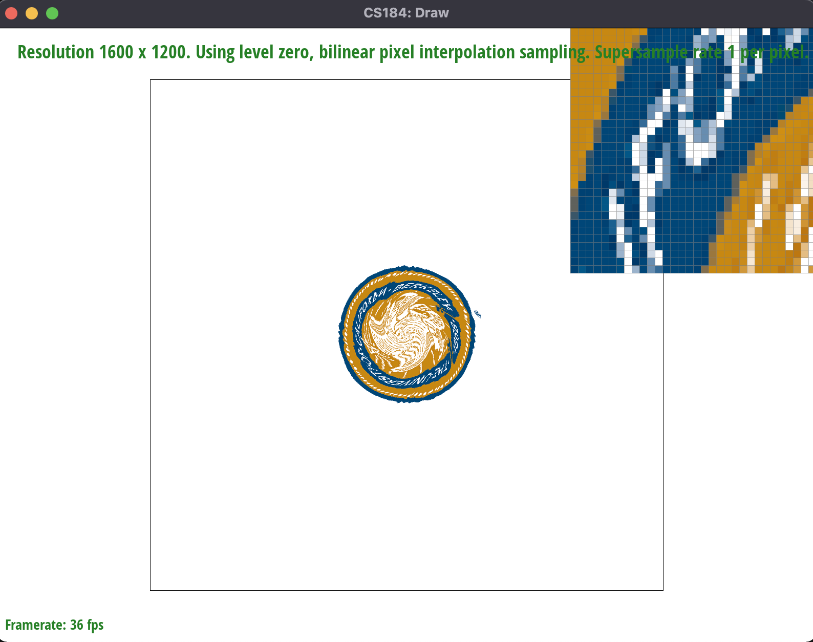
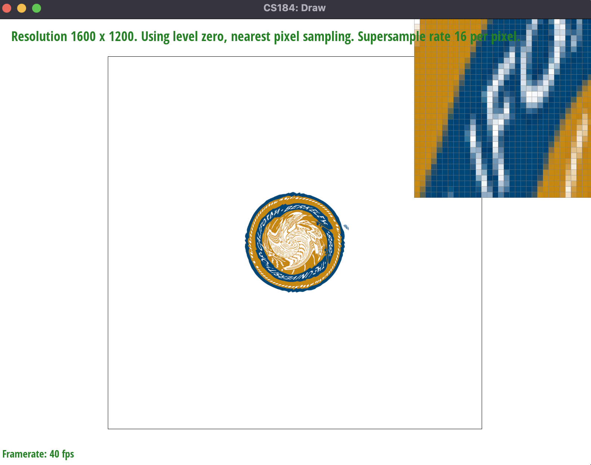
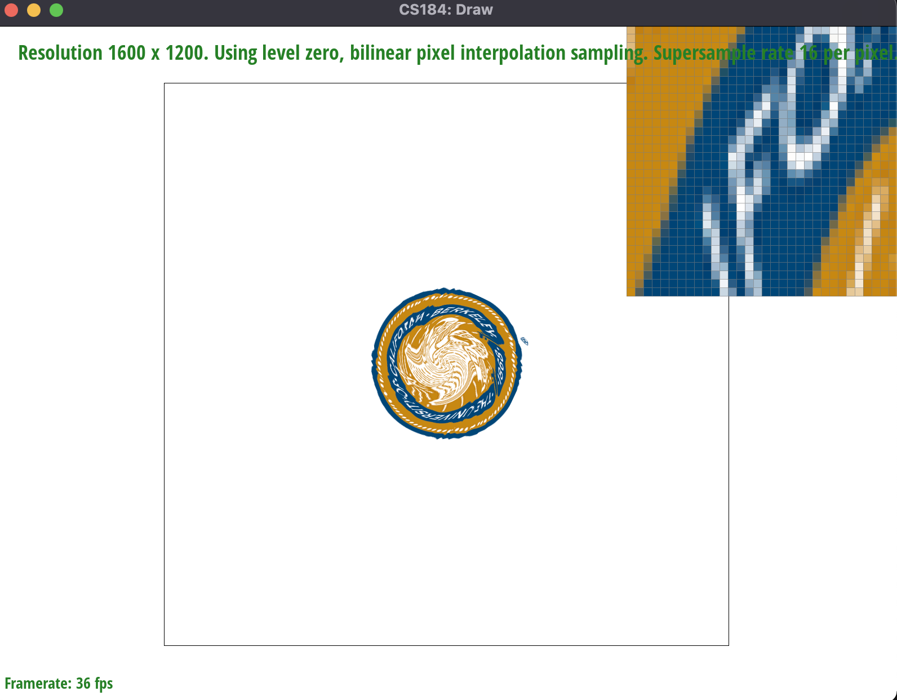
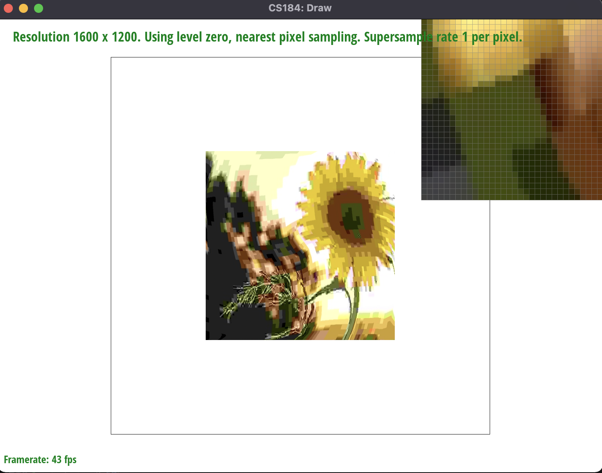
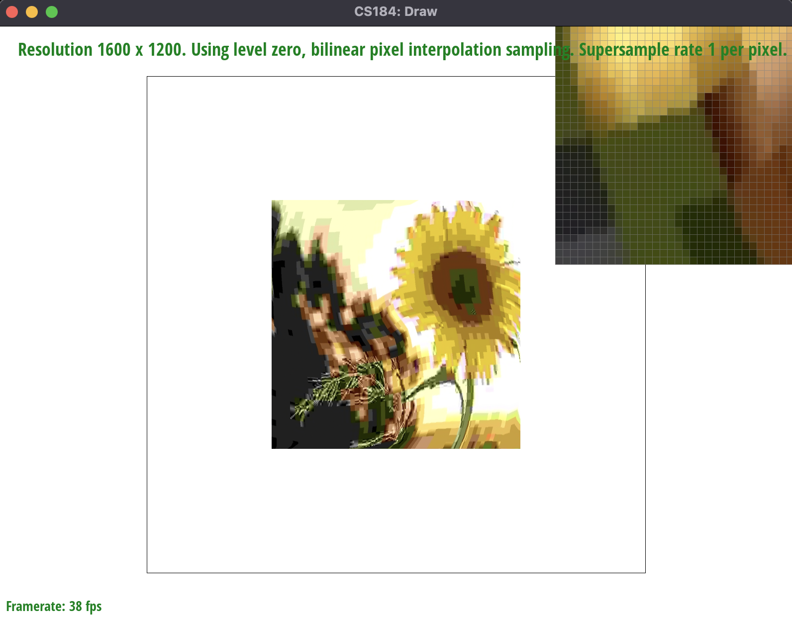
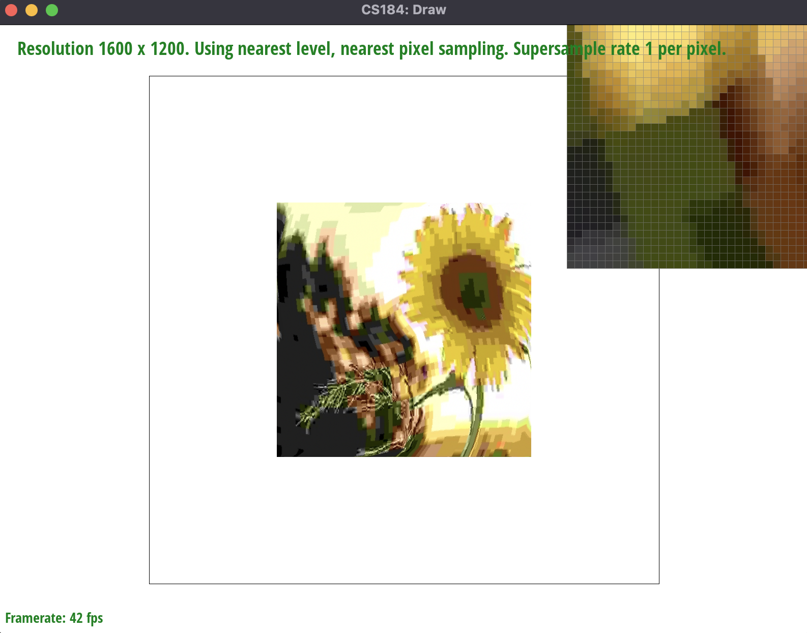

Overview
In this homework, we programmed a simple rasterizer which renders images from svg files and applies colors and textures to them. To implement the rasterizer, we had to utilize a variety of techniques such as barycentric coordinates for color/texture interpolation, mipmaps for texture mapping, and supersampling for anti-aliasing the edges.
From a ton of rather abstract mathematical ideas (normal vectors, triangle areas, etc.), we not only learned how to conceptualize full images from a collection of triangles, but also learned how to apply vector equations and matrices to further complexify and warp our images.
A great example of this is barycentric coordinates, a method of “calculating” where a point is within a triangle in order to apply the right color/texture to it. Before this homework, we had little to no clue on how a computer can apply such complex, continuous colors on shapes and images in such a quick way. Barycentric coordinates effectively apply a “weight” to each point within our triangle, and these weights determine exactly how we’re coloring/texturing these points. Such ingenuity was completely foreign to us before this assignment, but now that we’re equipped with this powerful idea, we can apply coloring and texturing to any image by first breaking it down into triangles, calculating the barycentric coordinates for each point within each triangle, and applying the right color/texture to it.
Section I: Rasterization
Part 1: Rasterizing single-color triangles
Rasterization is the process of taking some image, and plastering this image onto a frame buffer. While the real-life image is continuous - with no jaggy edges and completely curved lines - our frame buffer is made up of a discrete set of pixels, where every pixel must be colored with one solid color. In terms of triangles, this requires us to go through every triangle in our image (after our image is triangulated for us), figure out all the points within that triangle, and color them effectively (such that it lines up with our original image).
To begin our algorithm for rasterizing a triangle, we first found the minimum and maximum x and y coordinates using the three given points of the triangle. This allows us to speed up our rasterization by a lot; it COULD be that our triangle covers up a very small portion of the frame buffer, so there’s no need to go through EVERY pixel in our frame buffer, because most of these pixels will not be within our triangle - just a small subset of them.
Now that we got the bounding box out of the way, we move to our implementation for figuring out which points are within our triangle. Our main idea was to use a combination of vectors and dot products. Firstly, we create three vectors - one for each edge in our triangle - such that the three vectors all move in a clockwise OR in a counterclockwise direction (we do not know the order of the vertices of our triangle that are given to us, so we must account for both cases - either they were given to us in a clockwise fashion, or a counter-clockwise fashion).
Next, we create the three normal/perpendicular vectors for these three vectors that we already made. These three normal vectors either all point “inside” the triangle, or “away” from the triangle, depending on if the vertices given to us were given in clockwise or counter-clockwise order.
Once this setup has been done, we can begin to iterate through all the pixels within our bounding box for the triangle. However, in order to sample according to the spec, for each integer point (x,y) that we check for our “in-triangle” test, we add 0.5 to both x and y - thus making our new point (x + 0.5, y + 0.5) - in order to sample the center of each pixel, rather than the lattice point.
We now actually begin our test to see if a point, say P = (x + 0.5, y + 0.5), is within our triangle. Firstly, we draw three vectors (so many vectors!), one vector from each vertex to P. Then, we take the dot product of each of these newly made vectors with its corresponding normal vector that we made beforehand. So, in the image below, vector AP would be dotted with vector n_2, vector CP with vector n_1, and vector BP with vector n_3 (the image assumes the normal vectors all point inward, but the normal vectors could all point outward, too).
If our point is within the triangle (including on the edge), then all the dot products will be non-negative (as we can see through the image). However, we must also account for the possibility that all the normal vectors point outward, instead. In this case, we want to make sure that all the dot products will be non-positive. Therefore, the key test for figuring out if a point is within our triangle is to figure out if all the three dot products are all non-positive, or all non-negative.
Our algorithm is no worse than one that checks each sample within the bounding box of the triangle because that is exactly what our algorithm does. For every sample within the bounding box, we use vector calculations to determine whether to color in each pixel or not. Each vector calculation takes constant time so it does not slow down the total time complexity of our algorithm.
Part 2: Antialiasing triangles
While task 1 allows us to rasterize our triangle, the final result it gives us isn’t always quite what we’re looking for. For instance, since we are coloring each pixel one solid color, this may result in “jagged” edges, instead of more smoother, straight edges.
In order to circumvent this issue, we can use supersampling. The main idea behind supersampling is that instead of sampling exactly one point for each pixel (in this case, the very middle of the pixel), we sample MORE points within a pixel, getting the color for each of these points (after figuring out if these points are within the triangle - they may not all be), and then taking the average of all these colors to figure out the final color of the pixel.
For instance, if our sample rate was 4, then instead of sampling the very center of the pixel for each pixel, we instead take 4 equally-spaced samples within each pixel, obtain the coloring for each of these 4 points, and then average the four colors out to get the final color of the pixel itself. In this task, we implement supersampling with sample rate 1 (which is just normal sampling), 4, 9, and 16.
Supersampling is useful because it allows us to render an image at a higher resolution and determine each pixel’s color before shrinking it down to the original size, producing a smoother and clearer image. To implement supersampling, we had to make multiple changes to our rasterization pipeline. For every pixel we sampled, it had to be sampled multiple times according to our sampling rate and have its color recorded so we could use the average to find the final color to fill the pixel with. To find the average color, we edited our resolve_to_framebuffer function to iterate through the sample_rate and find the final color produced from all of the samples within each pixel. Each rgb value from the final color was averaged using the sample_rate and used to produce the final pixel color. In addition, we also changed our fill_pixel function to update and scale our rbg_framebuffer and sample_buffer data structures to the correct colors that are used during supersampling.
We used supersampling to antialias our triangles as sampling each pixel using the sample_rate produced triangles with smoother edges. Instead of each triangle edge being super jagged and non-uniform, the edges were composed of pixels ranging from a darker to lighter color, creating a smoother visual display of each triangle’s edge.
|

|

|
Part 3: Transforms
We decided to update the original robot by creating a colorful dancing robot. To do this, we created a new svg file and adjusted and added multiple transformations from the original robot svg file. For every body part of the robot, we added or adjusted its rotational value to make the robot look like it was dancing. We also had to alter the translation for many of the parts, specifically the arms and legs after rotating them.
Section II: Sampling
Part 4: Barycentric coordinates
Barycentric coordinates are a weighted combination of three scalars, 𝛼, 𝛽, and 𝛾, and represents any point located within a bounding area. The equation for finding barycentric coordinates is (x, y) =𝛼A +𝛽B+𝛾C on the condition that 𝛼+𝛽+𝛾= 1 (and A ,B, C are all coordinates) . The alpha, beta, and gamma parameters can be used in a multitude of ways to alter images, such as interpolating colors and creating texture maps.
One of the most popular ways to represent barycentric points is through a triangle. In the triangle image below, the barycentric coordinates linearly interpolate the colors’ values at each coordinate to result in a smoothly blended color triangle. More specifically, we can state that the vertex Va represents the color red, Vc represents the color blue, and Vb represents the color green. Therefore, you can represent the barycentric coordinates for this triangle according to the equation (x, y) =𝛼VA +𝛽VB+𝛾VC . The closer a point is to vertex Va, the greater the weightage of 𝛼, resulting in a more red color. As a point moves closer to the center of mass of the triangle, the alpha, beta, and gamma parameters approximately have equal weightages, (1/3, 1/3, 1/3), resulting in a blackish color.
Part 5: "Pixel sampling" for texture mapping
Pixel sampling refers to the process of selecting a subset of pixel samples and also selecting texels samples within a texture file to enhance an image display. In other words, we can suppose we have two different coordinates: pixel coordinates and texel coordinates. What we’re trying to do is place our texel points over our pixel points, essentially giving our image some texture. There are multiple ways to place our texel points on our pixel points, because in many cases, these texel points are NOT one-to-one with the pixel points. The way we implemented this pixel mapping is by deploying two different methods, in which either method can be activated and used by the GUI: nearest sampling and bilinear sampling.
Nearest sampling essentially takes the nearest texel point to our pixel point, and samples the texture at that point to fill our pixel with. On the other hand, bilinear sampling will instead pick the four nearest texel points, and then averages out the texture based on those four points (sort of similar to how in supersampling, the final color in the pixel is the average of all the samples in the pixel). The way that these four points are “averaged” out is by using the numerical method of bilinear interpolation. It turns out that due to bilinear sampling looking at MORE points (4 instead of just 1 from nearest sampling), we can obtain more smoother, higher quality images. Also, the difference of color between neighboring pixels is much more fluid in bilinear sampling: colors do not go directly from light to dark, rather it’s more of a gradient.

|

|
|

|

|
Here it is evident that the bilinear sampling images have smoother edges with the letters ‘F’ and ‘O’ to be more defined in comparison to the nearest sampling images with the same supersampling rate. This difference becomes more apparent when looking at the areas with a stark color contrast. The bilinear sampling images have a smoother transition between colors while the nearest sampling images have more pronounced jaggies along its edges.
Part 6: "Level sampling" with mipmaps for texture mapping
Level sampling is when a number of precomputed mipmaps of an image at various resolution levels are sampled based on their distance to each pixel within the texture space. In other words, depending on how far away certain parts of an image is from the viewer, we would apply the right texture with the right detail, such that it doesn’t use too much computation, but also doesn’t look too untextured - it’s detailed just the right amount.
Level sampling essentially allows us to choose how high of a resolution we want different parts of our image to be; it is when precomputed mipmaps at various resolution levels are sampled based on their distance to each pixel within the texture space. In other words, depending on how far away certain parts of an image is from the viewer, we would apply the right texture with the right detail, such that it doesn’t use too much computation, but also doesn’t look too untextured - it’s detailed just the right amount. Intuitively, we would like to have the more detail-oriented parts of our image at a higher resolution, while also having the less detail-oriented parts of our image at a lower resolution. This effectively allows us to use less space for the parts of the image that don’t REQUIRE so much sampling, while also providing enough sampling for the higher resolution parts of our image, in order to really get the intricacies of that image to a tee.
The way we implemented texture mapping was by first sampling the points (x+1, y) and (x, y+1) in addition to (x, y), and getting each of their uv barycentric coordinates. This allows us to then calculate (du/dx, dv/dx) and (du/dy, dv/dy). From the lecture 5 slides, we then calculate the max of sqrt((du/dx)^2 + (dv/dx)^2) and sqrt((du/dy)^2 + (dv/dy)^2), call this value L, and finally compute log_2(L), thereby giving us our final mipmap level that we can use for texturing.
In terms of the different methods of level sampling, nearest level sampling will go through every pixel, and then apply a level that matches the closest to what its actual texture is. Bilinear level sampling goes a couple steps further, and actually alternates between two levels that “squash” the pixel from the top and bottom (this is done in our code by computing the ceiling and floor of the level). Then, depending on which value - the ceiling or floor - is closer to the true level, we weigh that value more, and then compute the weighted average of the two bounding values to compute the best suited value.
Between the three various techniques - pixel sampling, level sampling, and choosing the number of samples per pixel - there are tradeoffs as well as perks.
Starting with supersampling, this can greatly help with antialiasing around the edges of our triangles, and in general this can result in higher resolution images. However, supersampling is costly, as it can involve requiring much more memory very quickly, and the rendering speed could get slower also pretty quickly due to this (sometimes exponential) increase in data.
As for pixel sampling, memory usage is not a huge issue due to this method acting on individual pixels, but speed and antialiasing power depend on the type of interpolating method used, as something like nearest sampling will be quick with adequate antialiasing, while bilinear sampling will take a little bit longer with much more impressive antialiasing results.
Finally, for level sampling, the speed is highly optimized due to the mipmaps, as we can prioritize applying more computations to finer-detailed parts of the image, while lesser-detailed parts don’t need that much computation. Also, since we can choose the level texture, we can apply more anti-aliasing to the parts of the image that actually NEED it, further improving optimization. However, the memory usage is rather large, as we need to store multiple textures, each at different resolutions (specifically, 4/3 of memory increase).
|

|

|
|

|
|